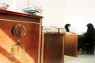

|
|
|
Browsing
Contact Us |
Campaigners |
Face to Face |
Tribune |
Interview |
News |
On the Web |
One Million |
Report
Farsi | Français | German | Italian | Spanish | العربية Also in this section
|
 Tour of local courts A Microcosm of Life under Discriminatory LawsBy: Maryam Malek; Translation: SZ Monday 24 December 2007 I enter the courtyard of the local family court. I take a look around. It is very hot. Many women and men are coming and going. One is crying; another is laughing. A man gives a woman an angry look and says: "Wretched woman! You couldn’t imagine what I would do, could you? I am going to divorce you and we’ll see how you plan to survive without me." Further away, a woman starts screaming and her chador (1) slips off her head. A man is beating her. Bystanders intervene and stop the man. You see many scenes like this. Addiction I entered the court looking for someone to interview, but to my total surprise, I ran into my former classmate Maral. Both of us were stunned. She hugged me and cried profusely. I calmed her down and we sat down. I asked her what she was doing there. Maral said, "I feel ashamed. I did not want any of my friends to see me in this situation." I assured her that I would not tell anyone else. She started telling me the story of her life. When she was 16 she had been pressured by her father to marry Mahmood. Nobody dared to act against one’s father’s wishes. Not long had passed since she had started living with Mahmood when she realized that Mahmood was a drug addict and had lost his job as a result of his addiction. Maral had become pregnant and because of her child, she had tried unsuccessfully to make Mahmood overcome his addiction. To make a living and to make ends meet, Maral had to go to people’s houses to do domestic work so that at least she could put food on the table; she even paid for her husband’s drugs because if she did not she would have to put up with being punched and kicked by him. No one would help her. When she told her father that she could no longer live with Mahmood, her father disagreed and said that he couldn’t afford to take care of her and the child. Not having any other choices, Maral came to Tehran to her sister. Through much hardship and effort, she was able to borrow some money and rent a small house. With the help of her sister’s husband, she found a job at a school and became a primary school teacher. Meanwhile, she filed for divorce, but her husband had fled for fear of being imprisoned. After six years, Maral finally succeeded in getting a divorce from her irresponsible husband and get custody of her child. And now she was at the court to go through the final stages of the legal process. She said, "I can’t believe that I am finally succeeding in getting a divorce. It is a very tiring process because a woman cannot easily get a divorce from her husband. I had to prove that he was both a drug addict and a fugitive." I wished her success and gave her some information about the Million Signatures Campaign. She started crying again and said, "Are there really people who fight for women’s rights? After six years, I was able to prove to the judge at the court what my rights were. Of course, I gave up many of my rights and my child’s rights because I got neither Mehrieh (2) nor child support. Who would I get those from, anyway? I will sign the petition hoping that I may save another woman who is in the same situation as I was." I said good-bye to Maral and she went on to finally get her divorce decree from the court clerk. Maral is now 26, but she looks like a 40-year-old woman. She is a broken and lonely woman who has custody of her son, and without getting any support, she lives on meager earnings working as an hourly contract teacher. Domestic Violence When Maral left, I went and sat next to a pretty woman wearing a chador. She had an innocent face and was deep in her thoughts. I asked her calmly why she was there. She answered calmly, "I am here to get a divorce. What about you?" I answered, "I am accompanying one of my friends so that she can get her divorce decree from the court." She said, "I got my divorce. I am waiting to get the decree so that I can quickly go to the notary public office (mahzar) with my father, husband and brother-in-law so that the clergyman there can perform the religious divorce ceremony." I asked her how long it took her to get a divorce. She answered that it officially took two days, but it really took her four years to free herself and her child from her psychotic husband. She went on to say that right before she got married, she was about to finish high school and receive her high school diploma. She was the only girl in the family, had two brothers and was the center of attention in her family. Since she turned 15, she had had many suitors, but she turned down all of them because she wanted to continue her education. However, when Saeed, the brother of one of her father’s coworkers came to ask for Zahra’s hand in marriage, her parents were overjoyed. They thought this suitor was better than Zahra’s previous suitors; he had a B.S. degree in mathematics from a public university and was expected to have a good future, and on top of that, he could help their daughter to continue her education and have a career in the future. Zahra did not accept at first, stating that she was not old enough to get married. She said that she did not know anything about married life when she got married. Zahra continued telling me her story, "Believe me, when I had my first menstrual period, I was so scared that I passed out because I did not know anything about these matters. My mother used to say that it was improper for girls to learn about these things too early in life. It was only after my first menstrual period that I discovered that this is something natural that happens to girls. And my parents wanted to marry off such a girl overnight. They did not consult with the family elders and neither did they do any real investigation of Saeed’s character or background. They trusted Saeed on account of my father’s trust in his coworkers. A day later, I got to meet Saeed face to face; this was the first time I had ever talked to a boy, and I did not really talk much. I had been told not to talk much because people would think that I was an immodest girl if I talked too much." Only a week after the meeting, I was married to Saeed. I settled for a very low Mehrieh because my father did not believe in demanding a big Mehrieh. Exactly a month after the marriage ceremony, my husband punched and kicked me in the back for the first time. I was shocked; I could neither cry nor talk. He kept asking me why a man on the street had looked at me. I had never been beaten by my brothers or my father, not even once, but Saeed kept beating me. I asked him which man had looked at me and told him that I had not even noticed or paid any attention to any men looking at me. He said that he didn’t know which man, but insisted that a man had looked at me anyway. Suddenly, I could not hold my tears inside anymore and started crying loudly. At this point, he suddenly realized how wrong he had been and started beating himself. I felt sorry for him and tried to convince myself that maybe he had just lost control. I told myself that maybe he was jealous of other men because he loved me too much and tried to believe that he wouldn’t beat himself so much if that was not the case. However, these beatings continued and every time he found an excuse to beat me. This went on until my family found out about it. His family knew that he was mentally unstable. I could no longer live with Saeed, but my father would not let me get a divorce. Every time I broke up with Saeed, my father would send someone to mediate and reconcile us. No one believed me when I said that Saeed was insane and had psychological problems. In front of others, he pretended to be normal. I attempted to commit suicide three times, but was unsuccessful. I had no support system and was very uninformed. For example, I did not know that if I got a bruise on my body I could go to the medical examiner and the bruises themselves would serve as evidence. My mother had found out about everything and pleaded with my father to help me get a divorce from Saeed, but my father would not agree. My brothers would not do anything either because they were afraid of my father. I was pressured to get pregnant in hopes that it would make Saeed come to his senses, but not only there was no improvement, it even made matters worse. Now, not only did he hurt me, he also hurt my newborn baby. He would keep bothering me continuously and would stop me from breast feeding the baby and as a result the baby would cry the whole time. This went on until I told my father that I would run away from home unless he helped me get a divorce from Saeed. My father knew that I would act on my decision and because he wanted to keep his good reputation so that people would not say that his daughter had run away, he finally agreed to help me get a divorce from Saeed. However, it was a conditional divorce, because Saeed had a big greed for money and did not want to pay out the Mehrieh. Consequently, he agreed to the divorce on the condition that he would not have to pay Mehrieh, but he did not pay me child support either. My son, Amir, is in my custody until age seven. Saeed has psychological problems, but I don’t know how I can prove it so that I can at least save my child. Because of my severe depression, I cannot commute to the court by myself. Finally, I am free after five years." Zahra took out a pill from her purse and took the pill while she was shaking. I brought her some water and tried to calm her. Her father approached her and said, "Get up quickly. We have to go to the notary public office." Zahra left. Zahra has a high school diploma, but she has no skills. She had become a victim of her husband’s domestic violence and no one had done anything to help her; she did not know what to do either. On top of all this, seven years down the road, she still has to come to the court and go up and down the court stairs so that the judge may give her the custody of her son. Permission to travel abroad I was broken-hearted and went out to the courtyard of the court. I bought some juice and started drinking it so that my blood pressure which had fallen below the normal level would pick back up a little. A kid, approximately four or five years old, was staring at me. How could I drink the juice while the kid was staring at me like that? I gave my fruit juice to the kid. She took the juice and drank it thirstily. I asked her, "What are you doing here by yourself, dear? Where are your mom and dad?" As I was talking to the little girl, a man came forward and asked her, "Who gave you that juice?" I told him that I had done it. He thanked me and offered to pay me for it, but I refused. He took the little girl by the hand and left. All of a sudden, the cry of a woman of approximately 25 to 26 years old wearing a manteau (3) caught everyone’s attention. She was the mother of the little girl whom I had given my fruit juice to. A woman who was helping her calm down gave me an account of what had happened. The woman wanted to travel abroad, but her husband was against it and would not give her permission to travel. The woman had to ask for a divorce. The husband took the child from her and said that she cannot take the child out of Iran. The judge gave a verdict in favor of the man. "They make you bury your motherly love and emotions and go"; this is what the woman told me as she left. Polygamy I went back to the courthouse again to look for another case. I sat next to a woman who had three children with her, two beautiful twin girls and a boy. I asked her if she was there to get a divorce too. She said yes. I asked, "Why did you bring your children then? Poor things get tired, don’t they?" She replied, "My mother is sick and cannot watch them. My father is at work; he’s a driver. My brothers and sisters are busy with their own lives. I asked, "Why do you want to get a divorce from your husband considering you have three kids?" She answered with a sad tone, "When my husband went bankrupt, he went to Bandar Abbas to find work and to get away from the people he owed money to. I accompanied him there and went through a lot of trouble and misery. The lenders took everything we had, even the television set I had gotten from my parents as a wedding gift. I put up with all this because I loved my husband. I did not know anybody in Bandar Abbas. My husband went to work every morning and did not come back until late at night. I only lived for his love, put up with all the problems and did not say anything. After a short time, I noticed that our situation had improved and we did not have financial problems anymore. I became suspicious and when I investigated further, I discovered the terrible truth. My husband had married another woman, a woman who had a child without an identity card and who was financially well off." "I didn’t tell him anything. I just remained silent and returned to Tehran with my three children. I waited for a couple of years hoping that he would regret what he had done and come back to us. But of course it was a false hope. I lived with my mother-in-law for two years and she unwillingly provided for me and my children. Now I have reached a point that I don’t know what to do anymore and I have come here to get a divorce from a man I once loved. He is nowhere to be found. He and his other wife left Bandar Abbas and nobody knows where they have gone. I even put an ad in the paper to no avail in hopes of finding him. I don’t know what to do. I want to have custody of my children. I can’t live without them." I asked, "How do you make a living." She answered, "I work." I asked, "How much education do you have?" She answered, "Third grade. I did not like school." She asked me, "Do you know how much monetary assistance the Assistance Committee gives to women who are heads of families?" I did not know what to say. I said I didn’t know. I did not want to make her feel even more desperate at a time like this. I wished her success and returned home. I had a bad headache and witnessing all the injustice and discrimination made me want to throw up. Custody battles, unfaithfulness, addiction, violence, and wives not having permission from their husbands to travel abroad: these were the outcomes of my conversations with women who had come to the court to get a divorce from their husbands. P.S.(1) Chador is a large cloth worn as a combination head covering, veil, and shawl usually by Muslim women, especially in Iran. (2) Mehrieh is an agreed upon amount of money that the woman is entitled to when entering a marriage contract. (3) Manteau is a French word used in Farsi meaning a loose cloak, coat or robe. The government of Iran requires women to wear a thick, long, loose fitting and usually dark colored coat at all times in public. |